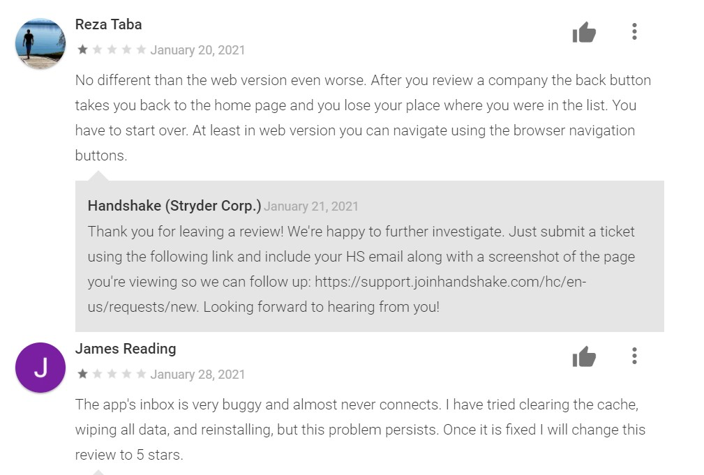

1. YouTube has a very good user interface especially on their web application. It allows to play videos from all over the world, that users choose to upload. I think their playback ability is very nice, I like listening to videos when I fall asleep. It is also very easy to navigate using their subscriptions, explore page, or the search bar. I think that YouTube’s playlist interface could improve. I like to make music video playlists but it can be very hard with their design. There’s no good shuffle options and not a great way of rearranging very large music playlists.
2. Another good user interface would be Spotify. I love using Spotify because it is very easy to navigate AND find new music. They have tons of option for exploring new music and their yearly review of what music you listened to is super fun and interactive. Many have followed their lead and created “story-like” reviews of your year with them on their app. Apple music started doing it and I even saw it on Robinhood. Although I love the many options of exploring sometimes when I am in a hurry like driving, I do think their interface can be bit overwhelming. Other than that I love using the application.
1. This is an example of a bad user interface. One of my professor's showed this to us in class. Sink’s typically work the opposite from the way it works in the video. You should be able to turn the sink knob up top and it should turn the water on. The water should then come from the spout, but in the video the water comes out of the knob and you need to turn the spout to turn it on. This may have just been a user error when they were installing it.
This is why software requirements should be clear and understandable. pic.twitter.com/Nky9EVYkIw
— Cannibal (@Cannibal) August 18, 2017
2. Another example of bad user interface would be Handshake. This application if available to UMKC students and is meant to help us find jobs. However their application is less than fun to navigate. Every time I enter a message in the inbox there is no back button. I have to go back to the homepage and go back to the inbox button and start looking at my messages from the beginning. Their reviews on the app store also support that their app is not very UI friendly. These are just 2 reviews left in the app store.
